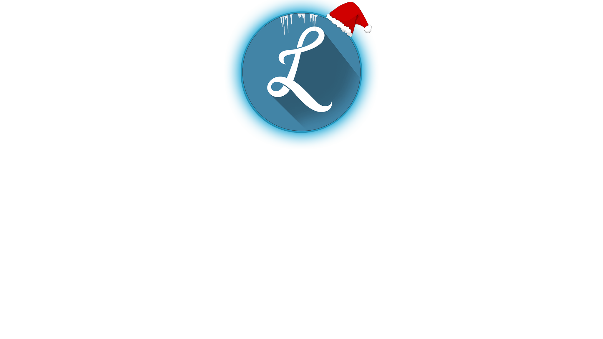
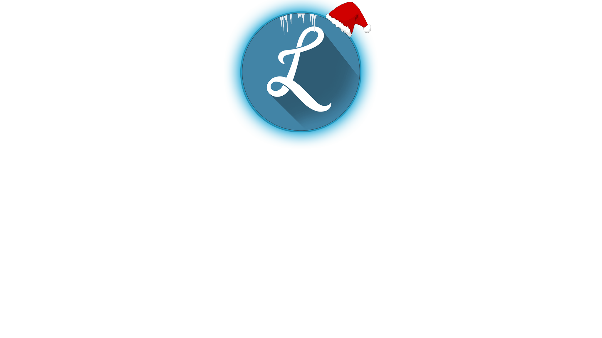

Le serveur Los Amigos est un serveur Discord français communautaire. Il représente une large communauté (d'environ 120 personnes). Tu veux du fun, des jeux, des évenements, etc ? Tu es au bon endroit. Ici, tu es sur le site officiel de la team LSMS, pas mal nan ? Le serveur discord possède également une histoire assez folle. Elle est assez longue mais elle méritera d'être écoutée plus tard. En ce qui concerne l'équipe, c'est très simple. Nous avons une équipe avec un staff certe pas très nombreux mais tout de même très actif, respectueux et dynamique. Cela permet de ne pas avoir un discord remplis de Staff (Helpeur, Modo, Admin, etc) partout ! vous serez ravis de savoir que le staff fais maintenant tourner le serveur depuis environ 1 année. Eh oui ! C'est beaucoup.
Comment savoir si le Discord est de qualité ? Franchement, il est sans doute comme les autres niveau contenu. Cependant, il possède différentes chose que les autres Serveur Discord n'ont pas ! Comme tu as déjà dû le voir, nous avons un site internet. Très peu courant pour un serveur discord pas vrai ? ET C'EST PAS TOUT ! Nous avons aussi un bot Discord spécifique et inédit appartennant à la team LSMS, développé par notre Dev faisant partie de l'équipe du Staff. Personellement, je valide fort.
Toute l'équipe du staff ainsi que la communauté fidèle comptent sur vous pour venir compléter celle-ci. Ce serais quand même chiant de passer à coté d'un serveur possédant des tas de qualités n'est ce pas ? Vous pourrez profiter de centaines de cadeaux différents, allant d'un nitro Discord jusqu'au Giveway de différents jeux de votre choix (des limitations de prix sont mis en place, abuse pas non plus !), c'est vraiment pas mal.
Pour finir ce monologue certe long mais important, sache que sur ce site, il te reste pas mal de chose à découvrir, fais attention où tu mets les pieds, cet univers est remplis de surprise et d'Easter Eggs. Soit tu laisses, soit tu t'y aventures pour percer tout les secrets de la team LSMS. Maintenant, à toi de décider !